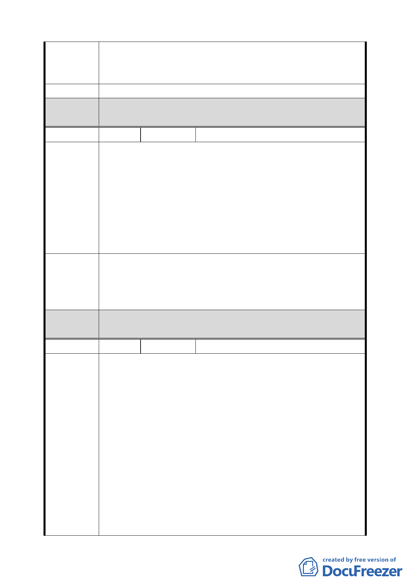

得價值，以確保土地及地上物等個人財產的價值，基於土
地未來整體使用之考量與達到使用分區管制之目的，故本
處不同意辦理變更為廣場用地，請維持原使用分區。
建 議 辦 法 請維持原使用分區
委 員 會 決 依市府本次提會審議資料內容，由市府開闢單位依據「各級政
議 府機關互相撥用公有不動產之有償或無償劃分原則」辦理。
編 號2
陳情人 國防部總政治作戰局
台北市中正區福和段 2 小段 667 及 667-3 地號等 2 筆土地
係奉行政院核納「國軍老舊眷村改建總冊土地清冊」內，於「國
軍老舊眷村改建計畫」細列為處分標的，查已依「國軍老舊眷
陳 情 理 由 村改建條例」暨相關規定，委託財政部國有財產局辦理估價、
標售中，爰請貴府調整都市計畫範圍，俾利憑辦後續處分；若
否，案內土地經都市計畫委員會審議通過，土地使用分區由「住
宅區」變更為「廣場用地」，請貴府儘速依據「各級政府機關
互相撥用公有不動產之有償或無償劃分原則」辦理有償撥用。
1. 請貴府調整都市計畫範圍，將 667 及 667-3 地號等 2 筆土
地自本計劃中排除。
建 議 辦 法 2. 若否，請貴府儘速依據「各級政府機關互相撥用公有不動
產之有償或無償劃分原則」辦理有償撥用。。
委 員 會 決 依市府本次提會審議資料內容，由市府開闢單位依據「各級
議 政府機關互相撥用公有不動產之有償或無償劃分原則」辦理。
編 號 3.
陳情人 台灣電力股份有限公司
1. 本案變更範圍Ｂ區部分，曾於 98 年 3 月 10 日由台北自來
水事業處委託漢洋建設公司辦理「擬定台北市中正區福和
段二小段 604-1 地號等 58 筆土地」都市更新事業概要公聽
會，而本公司所有臺北市中正區福和段 2 小段 607 及 607-1
地號等 2 筆土地，依原都市計畫係屬第三種住宅用地，未
來將據此計算本公司參加更新計畫之土地權利價值，惟依
陳 情 理 由 貴府旨揭公展資料變更後，本公司土地將幾乎全數變更為
道路用地，則本公司未來參與更新時之權利計算及分配基
礎，均將另以道路用地計算，致本公司權益嚴重受損。
2. 依本案都市更新事業概要擬新設之 8ｍ道路，按其基地建築
計畫，係作為該整體基地一樓及地下室車輛通往汀洲路之
「社區專設道路」，且不與毗鄰其他社區道路連通，其仍為
「私設道路」性質使用甚明。
-4-